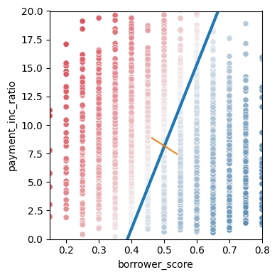
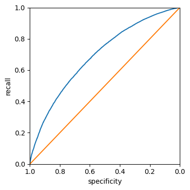
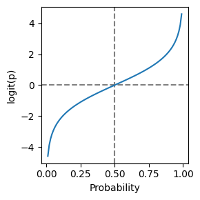
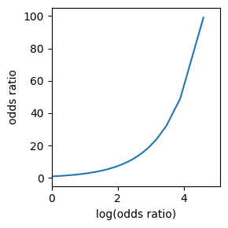
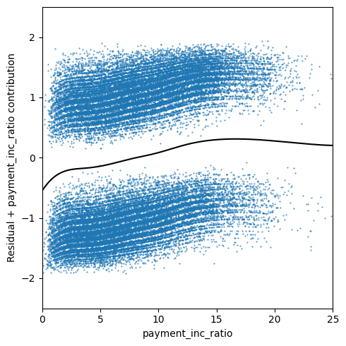
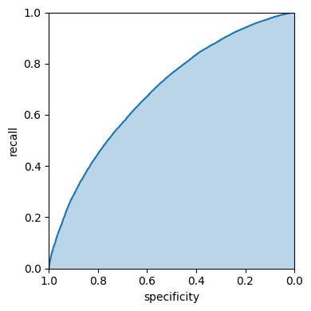
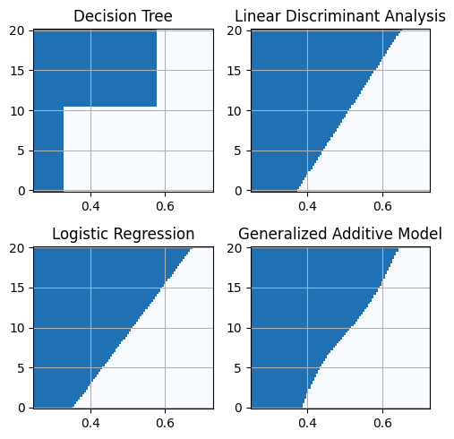

# from statsmodels.genmod.generalized_linear_model import GLMResults
from imblearn.over_sampling import SMOTE, ADASYN
from sklearn.compose import ColumnTransformer
from sklearn.discriminant_analysis import LinearDiscriminantAnalysis
from sklearn.linear_model import LogisticRegression
from sklearn.metrics import confusion_matrix
from sklearn.metrics import precision_score, recall_score
from sklearn.metrics import roc_auc_score
from sklearn.metrics import roc_curve
from sklearn.naive_bayes import MultinomialNB
from sklearn.pipeline import Pipeline
from sklearn.preprocessing import OneHotEncoder, KBinsDiscretizer
from sklearn.preprocessing import OrdinalEncoder
from sklearn.tree import DecisionTreeClassifier
import matplotlib.pyplot as plt
import mlba
import numpy as np
import pandas as pd
import pygam
import random
import seaborn as sns
import statsmodels.api as sm
import statsmodels.formula.api as smf
random.seed(123)
# Location of the data files. Adjust this path if you keep the data
# files in a different directory.
from pathlib import Path
DATA_DIR = Path('../data')Chapter 5: Classification
- 2019-2026 Peter C. Bruce, Andrew Bruce, Peter Gedeck
Classification
Naive Bayes
The Naive Solution
loan_data = pd.read_csv(DATA_DIR / "loan_data.csv.gz")
predictors = ["purpose_", "home_", "emp_len_"]
outcome = "outcome"
X = pd.get_dummies(loan_data[predictors], prefix="", prefix_sep="", dtype=int)
y = loan_data[outcome]
naive_model = MultinomialNB(alpha=0.01, fit_prior=True)
naive_model.fit(X, y)MultinomialNB(alpha=0.01)In a Jupyter environment, please rerun this cell to show the HTML representation or trust the notebook.
On GitHub, the HTML representation is unable to render, please try loading this page with nbviewer.org.
Parameters
new_loan = X.loc[146:146, :]print("predicted class: ", naive_model.predict(new_loan)[0])
probabilities = pd.DataFrame(naive_model.predict_proba(new_loan),
columns=naive_model.classes_)
print("predicted probabilities", probabilities)predicted class: default
predicted probabilities default paid off
0 0.653696 0.346304Numeric Predictor Variables
num_cols = ["borrower_score", "payment_inc_ratio"]
cat_cols = ["purpose_", "home_", "emp_len_"]
mixed_naive_model = Pipeline([
("pre", ColumnTransformer([
("cat", OneHotEncoder(handle_unknown="ignore"), cat_cols),
("num", KBinsDiscretizer(n_bins=5, strategy="uniform"), num_cols),
])),
("clf", MultinomialNB()),
])
X = loan_data[cat_cols + num_cols]
mixed_naive_model.fit(X, loan_data["outcome"])Pipeline(steps=[('pre',
ColumnTransformer(transformers=[('cat',
OneHotEncoder(handle_unknown='ignore'),
['purpose_', 'home_',
'emp_len_']),
('num',
KBinsDiscretizer(strategy='uniform'),
['borrower_score',
'payment_inc_ratio'])])),
('clf', MultinomialNB())])In a Jupyter environment, please rerun this cell to show the HTML representation or trust the notebook. On GitHub, the HTML representation is unable to render, please try loading this page with nbviewer.org.
Parameters
Parameters
['purpose_', 'home_', 'emp_len_']
Parameters
['borrower_score', 'payment_inc_ratio']
Parameters
Parameters
Discriminant Analysis
A Simple Example
loan3000 = pd.read_csv(DATA_DIR / "loan3000.csv")
loan3000.outcome = loan3000.outcome.astype("category")
predictors = ["borrower_score", "payment_inc_ratio"]
outcome = "outcome"
X = loan3000[predictors]
y = loan3000[outcome]
loan_lda = LinearDiscriminantAnalysis()
loan_lda.fit(X, y)
pd.DataFrame(loan_lda.scalings_, index=X.columns)| 0 | |
|---|---|
| borrower_score | 7.175839 |
| payment_inc_ratio | -0.099676 |
pred = pd.DataFrame(loan_lda.predict_proba(loan3000[predictors]),
columns=loan_lda.classes_)
pred.head()| default | paid off | |
|---|---|---|
| 0 | 0.553544 | 0.446456 |
| 1 | 0.558953 | 0.441047 |
| 2 | 0.272696 | 0.727304 |
| 3 | 0.506254 | 0.493746 |
| 4 | 0.609952 | 0.390048 |
# Use scalings and center of means to determine decision boundary
center = np.mean(loan_lda.means_, axis=0)
slope = - loan_lda.scalings_[0] / loan_lda.scalings_[1]
intercept = center[1] - center[0] * slope
# payment_inc_ratio for borrower_score of 0 and 20
x_0 = (0 - intercept) / slope
x_20 = (20 - intercept) / slope
lda_df = pd.concat([loan3000, pred["default"]], axis=1)
lda_df.head()
fig, ax = plt.subplots(figsize=(4, 4))
g = sns.scatterplot(x="borrower_score", y="payment_inc_ratio",
hue="default", data=lda_df,
palette=sns.diverging_palette(240, 10, n=9, as_cmap=True),
ax=ax, legend=False)
ax.set_ylim(0, 20)
ax.set_xlim(0.15, 0.8)
ax.plot((x_0, x_20), (0, 20), linewidth=3)
ax.plot(*loan_lda.means_.transpose())
plt.tight_layout()
plt.show()
Logistic Regression
Logistic Regression and the GLM
predictors = ["payment_inc_ratio", "purpose_", "home_", "emp_len_",
"borrower_score"]
outcome = "outcome"
X = pd.get_dummies(loan_data[predictors], prefix="", prefix_sep="",
drop_first=True, dtype=int)
y = loan_data[outcome]
logit_reg = LogisticRegression(C=np.inf, max_iter=1000)
logit_reg.fit(X, y)/Users/petergedeck/cdd/practical-statistics-for-data-scientists-code-3e/.venv/lib/python3.13/site-packages/sklearn/linear_model/_logistic.py:1170: UserWarning: Setting penalty=None will ignore the C and l1_ratio parameters
warnings.warn(LogisticRegression(C=inf, max_iter=1000)In a Jupyter environment, please rerun this cell to show the HTML representation or trust the notebook.
On GitHub, the HTML representation is unable to render, please try loading this page with nbviewer.org.
Parameters
print("intercept ", logit_reg.intercept_[0])
print("classes", logit_reg.classes_)
pd.DataFrame({"coeff": logit_reg.coef_[0]}, index=X.columns)intercept -1.6261242575653818
classes ['default' 'paid off']| coeff | |
|---|---|
| payment_inc_ratio | -0.079885 |
| borrower_score | 4.610744 |
| debt_consolidation | -0.250128 |
| home_improvement | -0.411826 |
| major_purchase | -0.228901 |
| medical | -0.528521 |
| other | -0.620839 |
| small_business | -1.222285 |
| OWN | -0.052460 |
| RENT | -0.159205 |
| > 1 Year | 0.349254 |
Predicted Values from Logistic Regression
pred = pd.DataFrame(logit_reg.predict_log_proba(X),
columns=logit_reg.classes_)
pred.describe()| default | paid off | |
|---|---|---|
| count | 45342.000000 | 45342.000000 |
| mean | -0.758078 | -0.760365 |
| std | 0.378317 | 0.390689 |
| min | -2.771842 | -3.546430 |
| 25% | -0.986107 | -0.977608 |
| 50% | -0.697477 | -0.688836 |
| 75% | -0.471941 | -0.466850 |
| max | -0.029251 | -0.064588 |
pred = pd.DataFrame(logit_reg.predict_proba(X),
columns=logit_reg.classes_)
pred.describe()| default | paid off | |
|---|---|---|
| count | 45342.000000 | 45342.000000 |
| mean | 0.499934 | 0.500066 |
| std | 0.167427 | 0.167427 |
| min | 0.062547 | 0.028827 |
| 25% | 0.373026 | 0.376210 |
| 50% | 0.497840 | 0.502160 |
| 75% | 0.623790 | 0.626974 |
| max | 0.971173 | 0.937453 |
Assessing the Model
y_numbers = [1 if yi == "default" else 0 for yi in y]
logit_reg_sm = sm.GLM(y_numbers, X.assign(const=1),
family=sm.families.Binomial())
logit_result = logit_reg_sm.fit()
print(logit_result.summary()) Generalized Linear Model Regression Results
==============================================================================
Dep. Variable: y No. Observations: 45342
Model: GLM Df Residuals: 45330
Model Family: Binomial Df Model: 11
Link Function: Logit Scale: 1.0000
Method: IRLS Log-Likelihood: -28757.
Date: Sun, 31 May 2026 Deviance: 57515.
Time: 18:07:11 Pearson chi2: 4.54e+04
No. Iterations: 4 Pseudo R-squ. (CS): 0.1112
Covariance Type: nonrobust
======================================================================================
coef std err z P>|z| [0.025 0.975]
--------------------------------------------------------------------------------------
payment_inc_ratio 0.0797 0.002 32.058 0.000 0.075 0.085
borrower_score -4.6126 0.084 -55.203 0.000 -4.776 -4.449
debt_consolidation 0.2494 0.028 9.030 0.000 0.195 0.303
home_improvement 0.4077 0.047 8.747 0.000 0.316 0.499
major_purchase 0.2296 0.054 4.277 0.000 0.124 0.335
medical 0.5105 0.087 5.882 0.000 0.340 0.681
other 0.6207 0.039 15.738 0.000 0.543 0.698
small_business 1.2153 0.063 19.192 0.000 1.091 1.339
OWN 0.0483 0.038 1.271 0.204 -0.026 0.123
RENT 0.1573 0.021 7.420 0.000 0.116 0.199
> 1 Year -0.3567 0.053 -6.779 0.000 -0.460 -0.254
const 1.6381 0.074 22.224 0.000 1.494 1.783
======================================================================================formula = ("outcome ~ bs(payment_inc_ratio, df=4) + purpose_ + "
"home_ + emp_len_ + bs(borrower_score, df=4)")
model = smf.glm(formula=formula, data=loan_data, family=sm.families.Binomial())
results = model.fit()print(results.summary()) Generalized Linear Model Regression Results
=====================================================================================================
Dep. Variable: ['outcome[default]', 'outcome[paid off]'] No. Observations: 45342
Model: GLM Df Residuals: 45324
Model Family: Binomial Df Model: 17
Link Function: Logit Scale: 1.0000
Method: IRLS Log-Likelihood: -28744.
Date: Sun, 31 May 2026 Deviance: 57487.
Time: 18:07:11 Pearson chi2: 4.54e+04
No. Iterations: 5 Pseudo R-squ. (CS): 0.1117
Covariance Type: nonrobust
==================================================================================================
coef std err z P>|z| [0.025 0.975]
--------------------------------------------------------------------------------------------------
Intercept 1.8382 0.380 4.836 0.000 1.093 2.583
purpose_[T.debt_consolidation] 0.2491 0.028 9.020 0.000 0.195 0.303
purpose_[T.home_improvement] 0.4138 0.047 8.848 0.000 0.322 0.505
purpose_[T.major_purchase] 0.2401 0.054 4.450 0.000 0.134 0.346
purpose_[T.medical] 0.5183 0.087 5.953 0.000 0.348 0.689
purpose_[T.other] 0.6295 0.040 15.812 0.000 0.552 0.708
purpose_[T.small_business] 1.2252 0.063 19.303 0.000 1.101 1.350
home_[T.OWN] 0.0484 0.038 1.273 0.203 -0.026 0.123
home_[T.RENT] 0.1581 0.021 7.456 0.000 0.117 0.200
emp_len_[T. > 1 Year] -0.3541 0.053 -6.729 0.000 -0.457 -0.251
bs(payment_inc_ratio, df=4)[0] 0.0049 0.121 0.041 0.967 -0.232 0.241
bs(payment_inc_ratio, df=4)[1] 1.6033 0.142 11.289 0.000 1.325 1.882
bs(payment_inc_ratio, df=4)[2] 1.9033 0.488 3.900 0.000 0.947 2.860
bs(payment_inc_ratio, df=4)[3] -0.8521 1.929 -0.442 0.659 -4.633 2.929
bs(borrower_score, df=4)[0] -1.0045 0.476 -2.112 0.035 -1.937 -0.072
bs(borrower_score, df=4)[1] -2.6411 0.287 -9.209 0.000 -3.203 -2.079
bs(borrower_score, df=4)[2] -3.6984 0.473 -7.824 0.000 -4.625 -2.772
bs(borrower_score, df=4)[3] -5.8564 0.525 -11.160 0.000 -6.885 -4.828
==================================================================================================Analysis of residuals
Evaluating Classification Models
Confusion Matrix
pred = logit_reg.predict(X)
pred_y = logit_reg.predict(X) == "default"
true_y = y == "default"
true_pos = true_y & pred_y
true_neg = ~true_y & ~pred_y
false_pos = ~true_y & pred_y
false_neg = true_y & ~pred_y
conf_mat = pd.DataFrame([[np.sum(true_pos), np.sum(false_neg)],
[np.sum(false_pos), np.sum(true_neg)]],
index=["Y = default", "Y = paid off"],
columns=["Yhat = default", "Yhat = paid off"])
conf_mat| Yhat = default | Yhat = paid off | |
|---|---|---|
| Y = default | 14321 | 8350 |
| Y = paid off | 8140 | 14531 |
print(confusion_matrix(y_true=y, y_pred=logit_reg.predict(X)))[[14321 8350]
[ 8140 14531]]mlba.classificationSummary(y_true=y, y_pred=logit_reg.predict(X))Confusion Matrix (Accuracy 0.6363)
Prediction
Actual default paid off
default 14321 8350
paid off 8140 14531Precision, Recall, and Specificity
y_pred = logit_reg.predict(X)
print("precision ", precision_score(y, y_pred, pos_label="default"))
print("recall. ", recall_score(y, y_pred, pos_label="default"))
print("specificity", recall_score(y, y_pred, pos_label="paid off"))precision 0.6375940519122034
recall. 0.6316880596356579
specificity 0.640950994662785ROC Curve
fpr, tpr, thresholds = roc_curve(y, logit_reg.predict_proba(X)[:, 0],
pos_label="default")
roc_df = pd.DataFrame({"recall": tpr, "specificity": 1 - fpr})
ax = roc_df.plot(x="specificity", y="recall", figsize=(4, 4), legend=False)
ax.set_ylim(0, 1)
ax.set_xlim(1, 0)
ax.plot((1, 0), (0, 1))
ax.set_xlabel("specificity")
ax.set_ylabel("recall")
plt.tight_layout()
plt.show()
AUC
print(np.sum(roc_df.recall[:-1] * np.diff(1 - roc_df.specificity)))
print(roc_auc_score([1 if yi == "default" else 0 for yi in y],
logit_reg.predict_proba(X)[:, 0]))0.6917057288869074
0.6917058067118191Strategies for Imbalanced Data
Undersampling
full_train_set = pd.read_csv(DATA_DIR / "full_train_set.csv.gz")
print("percentage of loans in default: ",
100 * np.mean(full_train_set.outcome == "default"))percentage of loans in default: 18.894546909248504predictors = ["payment_inc_ratio", "purpose_", "home_", "emp_len_",
"dti", "revol_bal", "revol_util"]
outcome = "outcome"
X = pd.get_dummies(full_train_set[predictors], prefix="", prefix_sep="",
drop_first=True, dtype=int)
y = full_train_set[outcome]
full_model = LogisticRegression(C=np.inf, max_iter=10_000)
full_model.fit(X, y)
print("percentage of loans predicted to default: ",
100 * np.mean(full_model.predict(X) == "default"))/Users/petergedeck/cdd/practical-statistics-for-data-scientists-code-3e/.venv/lib/python3.13/site-packages/sklearn/linear_model/_logistic.py:1170: UserWarning: Setting penalty=None will ignore the C and l1_ratio parameters
warnings.warn(percentage of loans predicted to default: 0.3883754073357947Oversampling and Up/Down Weighting
default_wt = 1 / np.mean(full_train_set.outcome == "default")
wt = [default_wt if outcome == "default" else 1
for outcome in full_train_set.outcome]
full_model = LogisticRegression(C=np.inf, max_iter=10_000)
full_model.fit(X, y, sample_weight=wt)
print("percentage of loans predicted to default (weighting): ",
100 * np.mean(full_model.predict(X) == "default"))/Users/petergedeck/cdd/practical-statistics-for-data-scientists-code-3e/.venv/lib/python3.13/site-packages/sklearn/linear_model/_logistic.py:1170: UserWarning: Setting penalty=None will ignore the C and l1_ratio parameters
warnings.warn(percentage of loans predicted to default (weighting): 57.61874203038663Supplementary Material
Figure 5-2. Graph of the logit function that maps a probability to a scale suitable for a linear model
p = np.arange(0.01, 1, 0.01)
df = pd.DataFrame({
"p": p,
"logit": np.log(p / (1 - p)),
"odds": p / (1 - p),
})
fig, ax = plt.subplots(figsize=(3, 3))
ax.axhline(0, color="grey", linestyle="--")
ax.axvline(0.5, color="grey", linestyle="--")
ax.plot(df["p"], df["logit"])
ax.set_xlabel("Probability")
ax.set_ylabel("logit(p)")
plt.tight_layout()
plt.show()
How to control the order of the classes in Python
# If you have a feature or outcome variable that is ordinal, use
# the scikit-learn `OrdinalEncoder` to replace the categories
# (here, "paid off" and "default") with numbers. In the below code,
# we replace "paid off" with 0 and "default" with 1. This reverses
# the order of the predicted classes and as a consequence, the
# coefficients will be reversed. You will however now need to
# keep track of how the the numbers map back to the classes.predictors = ["payment_inc_ratio", "purpose_", "home_", "emp_len_",
"borrower_score"]
outcome = "outcome"
X = pd.get_dummies(loan_data[predictors], prefix="", prefix_sep="",
drop_first=True, dtype=int)
enc = OrdinalEncoder(categories=[["paid off", "default"]])
y_enc = enc.fit_transform(loan_data[[outcome]]).ravel()
logit_reg_enc = LogisticRegression(C=np.inf, max_iter=1000)
logit_reg_enc.fit(X, y_enc)
print("intercept ", logit_reg_enc.intercept_[0])
print("classes", logit_reg_enc.classes_)
pd.DataFrame({"coeff": logit_reg_enc.coef_[0]}, index=X.columns)intercept 1.6262802328204813
classes [0. 1.]/Users/petergedeck/cdd/practical-statistics-for-data-scientists-code-3e/.venv/lib/python3.13/site-packages/sklearn/linear_model/_logistic.py:1170: UserWarning: Setting penalty=None will ignore the C and l1_ratio parameters
warnings.warn(| coeff | |
|---|---|
| payment_inc_ratio | 0.079896 |
| borrower_score | -4.611003 |
| debt_consolidation | 0.250206 |
| home_improvement | 0.411879 |
| major_purchase | 0.228987 |
| medical | 0.528678 |
| other | 0.620869 |
| small_business | 1.222274 |
| OWN | 0.052453 |
| RENT | 0.159220 |
| > 1 Year | -0.349459 |
Figure 5-3. The relationship between the odds ratio and the log-odds ratio
fig, ax = plt.subplots(figsize=(3, 3))
ax.plot(df["logit"], df["odds"])
ax.set_xlabel("log(odds ratio)")
ax.set_ylabel("odds ratio")
ax.set_xlim(0, 5.1)
ax.set_ylim(-5, 105)
plt.tight_layout()
plt.show()
Figure 5-4. Partial residuals from logistic regression
def partial_residual_plot(model, df, outcome, feature, fig, ax):
y_actual = [0 if s == "default" else 1 for s in df[outcome]]
y_pred = model.predict(df)
org_params = model.params.copy()
zero_params = model.params.copy()
# set model parametes of other features to 0
for i, name in enumerate(zero_params.index):
if feature in name:
continue
zero_params.iloc[i] = 0.0
model.initialize(model.model, zero_params)
feature_prediction = model.predict(df)
ypartial = -np.log(1 / feature_prediction - 1)
ypartial -= np.mean(ypartial)
model.initialize(model.model, org_params)
results = pd.DataFrame({
"feature": df[feature],
"residual": -2 * (y_actual - y_pred),
"ypartial": ypartial / 2,
})
results = results.sort_values(by=["feature"])
ax.scatter(results.feature, results.residual, marker=".", s=72. / fig.dpi)
ax.plot(results.feature, results.ypartial, color="black")
ax.set_xlabel(feature)
ax.set_ylabel(f"Residual + {feature} contribution")
return ax
formula = ("outcome ~ bs(payment_inc_ratio, df=8) + purpose_ + "
"home_ + emp_len_ + bs(borrower_score, df=3)")
model = smf.glm(formula=formula, data=loan_data, family=sm.families.Binomial())
results = model.fit()
fig, ax = plt.subplots(figsize=(5, 5))
partial_residual_plot(results, loan_data, "outcome", "payment_inc_ratio", fig, ax)
ax.set_xlim(0, 25)
ax.set_ylim(-2.5, 2.5)
plt.tight_layout()
plt.show()
Figure 5-7. Area under the ROC curve for the loan data
ax = roc_df.plot(x="specificity", y="recall", figsize=(4, 4), legend=False)
ax.set_ylim(0, 1)
ax.set_xlim(1, 0)
ax.set_xlabel("specificity")
ax.set_ylabel("recall")
ax.fill_between(roc_df.specificity, 0, roc_df.recall, alpha=0.3)
plt.tight_layout()
plt.show()
SMOTE
predictors = ["payment_inc_ratio", "purpose_", "home_", "emp_len_",
"dti", "revol_bal", "revol_util"]
outcome = "outcome"
X = pd.get_dummies(full_train_set[predictors], prefix="", prefix_sep="",
drop_first=True, dtype=int)
y = full_train_set[outcome]
X_resampled, y_resampled = SMOTE().fit_resample(X, y)
print("percentage of loans in default (SMOTE resampled): ",
f"{100 * np.mean(y_resampled == 'default'):.2f}")
full_model = LogisticRegression(C=np.inf, max_iter=10_000)
full_model.fit(X_resampled, y_resampled)
print("percentage of loans predicted to default (SMOTE): ",
f"{100 * np.mean(full_model.predict(X) == 'default'):.2f}")
X_resampled, y_resampled = ADASYN().fit_resample(X, y)
print("percentage of loans in default (ADASYN resampled): ",
f"{100 * np.mean(y_resampled == 'default'):.2f}")
full_model = LogisticRegression(C=np.inf, max_iter=10_000)
full_model.fit(X_resampled, y_resampled)
print("percentage of loans predicted to default (ADASYN): ",
f"{100 * np.mean(full_model.predict(X) == 'default'):.2f}")percentage of loans in default (SMOTE resampled): 50.00/Users/petergedeck/cdd/practical-statistics-for-data-scientists-code-3e/.venv/lib/python3.13/site-packages/sklearn/linear_model/_logistic.py:1170: UserWarning: Setting penalty=None will ignore the C and l1_ratio parameters
warnings.warn(percentage of loans predicted to default (SMOTE): 29.51
percentage of loans in default (ADASYN resampled): 48.56/Users/petergedeck/cdd/practical-statistics-for-data-scientists-code-3e/.venv/lib/python3.13/site-packages/sklearn/linear_model/_logistic.py:1170: UserWarning: Setting penalty=None will ignore the C and l1_ratio parameters
warnings.warn(percentage of loans predicted to default (ADASYN): 27.37Figure 5-8. Comparison of the classification rules for four different methods
predictors = ["borrower_score", "payment_inc_ratio"]
outcome = "outcome"
X = loan3000[predictors]
y = loan3000[outcome]
loan_tree = DecisionTreeClassifier(random_state=1, criterion="entropy",
min_impurity_decrease=0.003)
loan_tree.fit(X, y)
loan_lda = LinearDiscriminantAnalysis()
loan_lda.fit(X, y)
logit_reg = LogisticRegression(penalty="l2", solver="liblinear")
logit_reg.fit(X, y)
## model
gam = pygam.LinearGAM(pygam.s(0) + pygam.s(1))
print(gam.gridsearch(X.values, [1 if yi == "default" else 0 for yi in y]))/Users/petergedeck/cdd/practical-statistics-for-data-scientists-code-3e/.venv/lib/python3.13/site-packages/sklearn/linear_model/_logistic.py:1135: FutureWarning: 'penalty' was deprecated in version 1.8 and will be removed in 1.10. To avoid this warning, leave 'penalty' set to its default value and use 'l1_ratio' or 'C' instead. Use l1_ratio=0 instead of penalty='l2', l1_ratio=1 instead of penalty='l1', and C=np.inf instead of penalty=None. warnings.warn( 0% (0 of 11) | | Elapsed Time: 0:00:00 ETA: --:--:-- 45% (5 of 11) |########### | Elapsed Time: 0:00:00 ETA: 0:00:00 90% (10 of 11) |##################### | Elapsed Time: 0:00:00 ETA: 0:00:00 100% (11 of 11) |########################| Elapsed Time: 0:00:00 Time: 0:00:00
LinearGAM(callbacks=[Deviance(), Diffs()], fit_intercept=True,
max_iter=100, scale=None, terms=s(0) + s(1) + intercept,
tol=0.0001, verbose=False)models = {
"Decision Tree": loan_tree,
"Linear Discriminant Analysis": loan_lda,
"Logistic Regression": logit_reg,
"Generalized Additive Model": gam,
}
fig, axes = plt.subplots(nrows=2, ncols=2, figsize=(5, 5))
xvalues = np.arange(0.25, 0.73, 0.005)
yvalues = np.arange(-0.1, 20.1, 0.1)
xx, yy = np.meshgrid(xvalues, yvalues)
X = pd.DataFrame({
"borrower_score": xx.ravel(),
"payment_inc_ratio": yy.ravel(),
})
boundary = {}
for n, (title, model) in enumerate(models.items()):
ax = axes[n // 2, n % 2]
predict = model.predict(X)
if "Generalized" in title:
Z = np.array([1 if z > 0.5 else 0 for z in predict])
else:
Z = np.array([1 if z == "default" else 0 for z in predict])
Z = Z.reshape(xx.shape)
boundary[title] = yvalues[np.argmax(Z > 0, axis=0)]
boundary[title][Z[-1, :] == 0] = yvalues[-1]
c = ax.pcolormesh(xx, yy, Z, cmap="Blues", vmin=0.1, vmax=1.3, shading="auto")
ax.set_title(title)
ax.grid(visible=True)
plt.tight_layout()
plt.show()